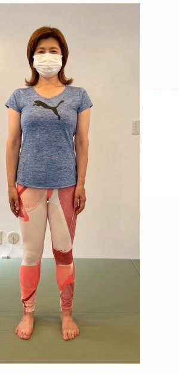
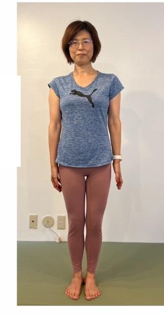
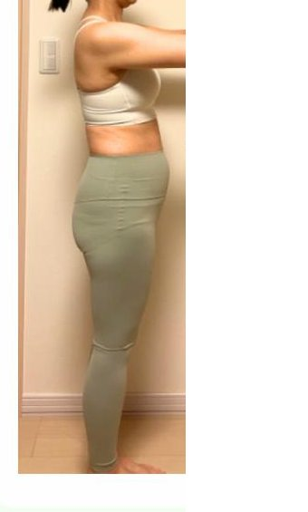
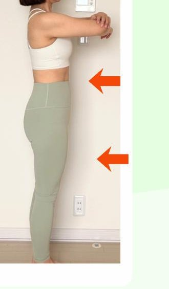
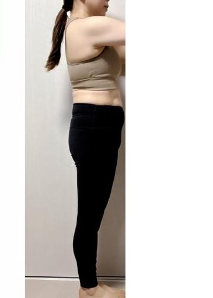
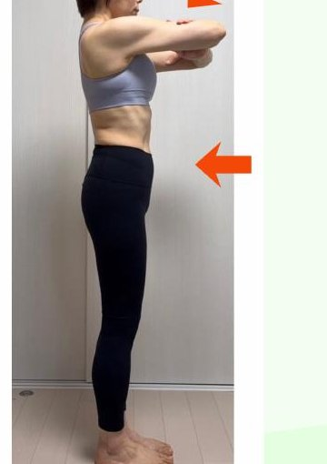
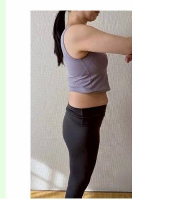
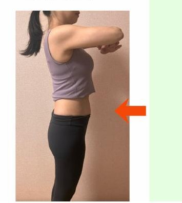

年齢関係なく痩せた
イメージ写真
イメージ写真
01
年齢は関係ないと気づける
56歳で人生最大体重からマイナス10kg。年齢ではなく「日常の習慣」が体をつくっていることがわかります。
「どうせもう痩せるのは無理…」
と諦めかけた40・50代のあなたへ
＼ この夏、自信を持って腕を出そう ／

CONCERN
その諦め、本当に最後にしませんか？
BENEFIT
56歳で人生最大体重からマイナス10kg。年齢ではなく「日常の習慣」が体をつくっていることがわかります。
一時的に落とすダイエットではなく、「戻せる自分」をつくる仕組み。外食やデザートを楽しんでも大丈夫。
意志の弱さではなく栄養不足が原因。我慢せずに間食欲が自然に消えていく流れを体験できます。
RESULTS
の方が「頑張るダイエット」を
卒業しました

2023.01
60.4kg

2024.07
50.9kg


体重 −5kg
ウエスト −5cm
食事だけでなく、心の支えがあったのが本当に大きかったです。


体重 −8.3kg
ウエスト −13cm
ちゃんと食べて痩せるを実感。続ければ体は確実に変わると実感できました。


体重 −3.8kg
体脂肪 −5%
ダイエットってそんなに無理しなくていいんだ、とわかりました。
ABOUT
鶴岡 好美
50代からの食べ痩せダイエットコーチ
2023年の正月明け、体重が増えていても「誤差の範囲」と思って過ごしていたら、気づけば人生最大の60kg超えに。
おやつを1ヶ月抜いても、糖質を抜いても痩せない。「年齢のせい」「もう痩せない」——そう諦めていた私が、食事の考え方を変えただけで、1年半でマイナス10kg・体脂肪率−10%を達成しました。
頑張るのではなく、日常の習慣を整えるだけ。年齢に関係なく、理想の姿は目指せる——同じ悩みを持つ女性に伝えたくて、この活動を始めました。
SCHEDULE

「年齢だから痩せない」の思い込みを外す
痩せない本当の理由

リバウンドしない人がやっている
食事の3つの習慣

甘いもの欲が消える仕組み
〜栄養バランスのキホン〜

外食しても戻せる
「調整力」の身につけ方

この夏、ノースリーブで歩くための
30日間アクションプラン
※ LINEにご登録いただいた当日から、毎日1通お届けします
FAQ
本当に無料ですか？追加請求はありませんか？
はい、完全無料です。LINE登録後、5日間にわたって配信をお届けします。途中で料金が発生することはありません。
毎日時間が取れるか不安です
1日3〜5分で読める内容です。隙間時間に読んで、できることから取り入れていただけます。
運動は必要ですか？
運動なしでOKです。私自身も運動ゼロでマイナス10kgを達成しました。日常の食習慣を整えるだけで変化は起こせます。
意志が弱くて続けられる自信がありません
意志ではなく「仕組み」で変えていきます。甘いもの欲は栄養不足が原因なので、栄養が整えば自然と欲は消えていきます。
「もう痩せない」という諦めを、
この5日間で手放してみませんか？
この夏、自信を持って
ノースリーブの白いワンピースで
海へ出かけましょう。
LINE登録後、自動で配信がはじまります